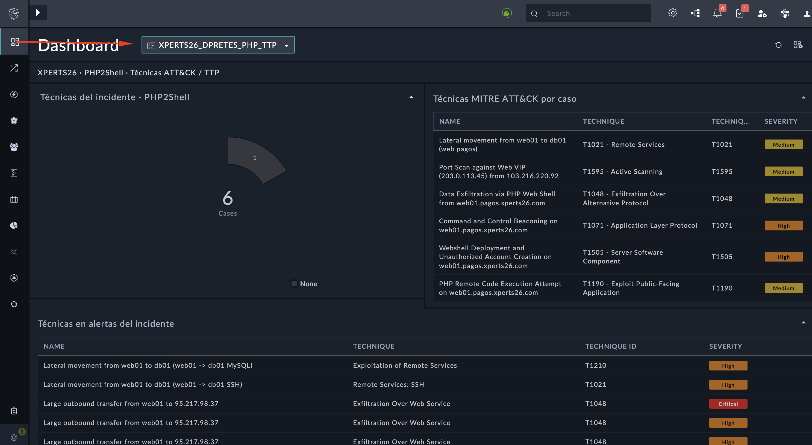
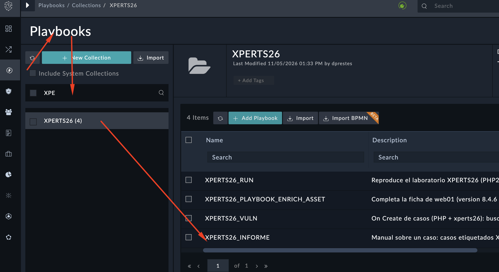
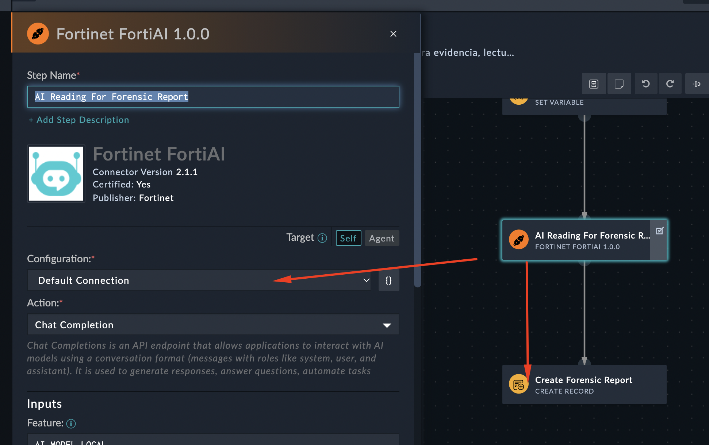
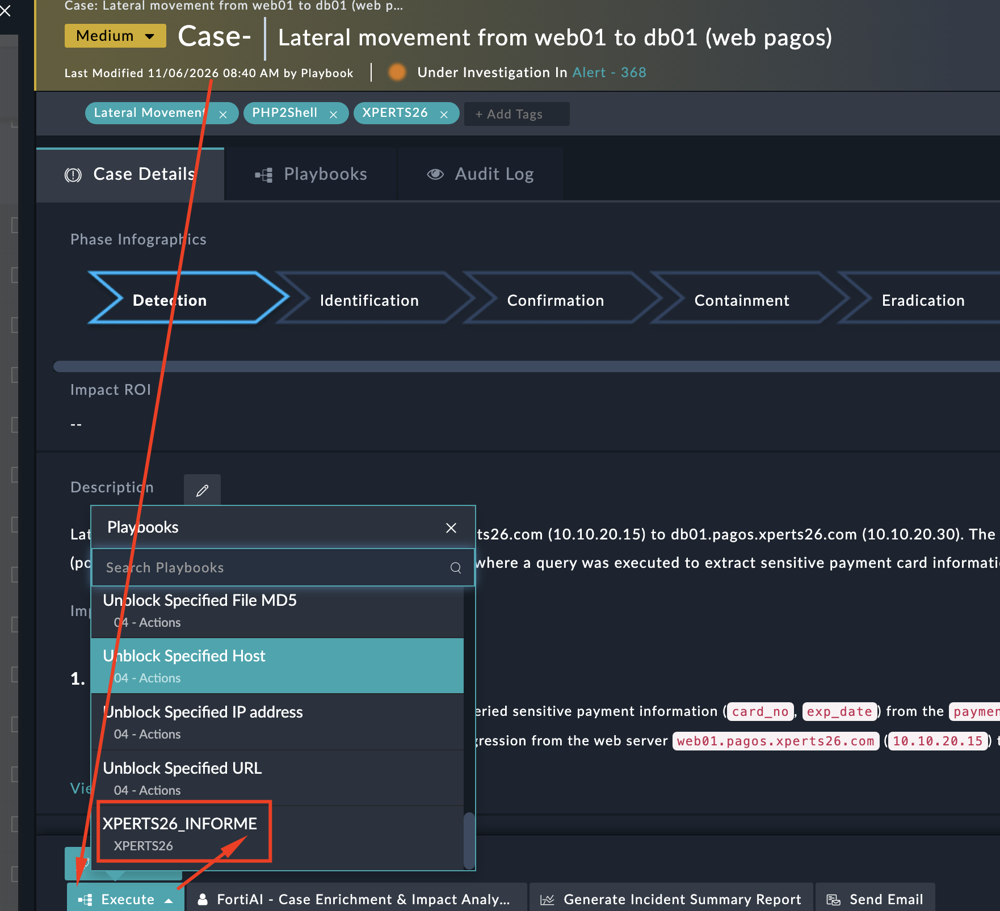
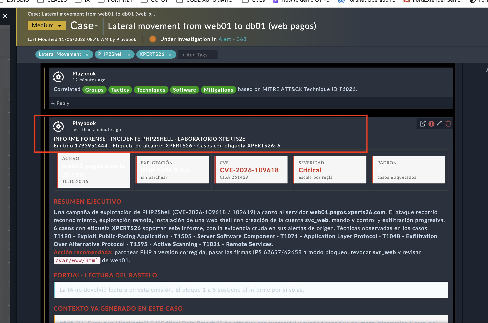
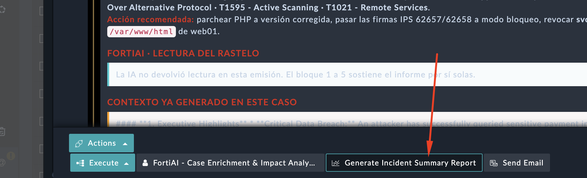
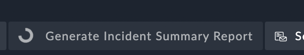
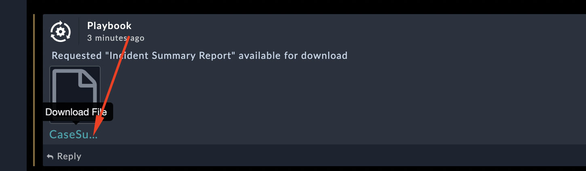
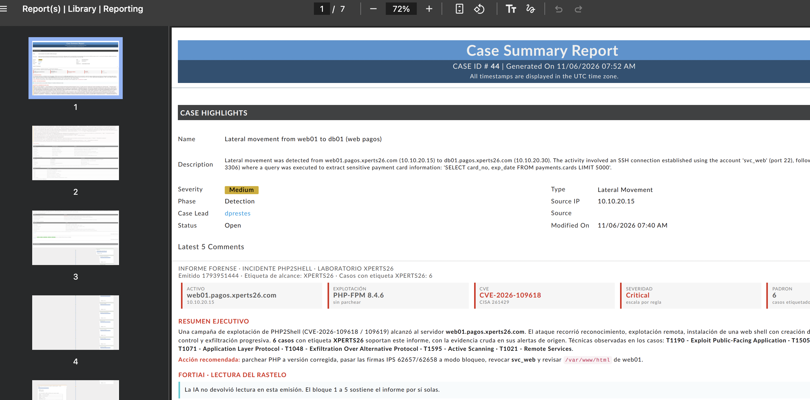

8. Tarea 8 — Cierre: el expediente que se entrega al cliente#
8.1. Objetivo#
Duración: 15–20 min
Tareas:
Revisar el dashboard XPERTS26_DPRETES_PHP_TTP
Etiquetar con XPERTS26 todos los casos abiertos
Generar el informe forense con FortiAI
Descargar el PDF del expediente
8.2. Pasos#
Antes de nada, revisa el dashboard XPERTS26_DPRETES_PHP_TTP: donut de técnicas y ambas tablas. Concide lo que ves con lo que has venido reportando.


Etiqueta con XPERTS26 todos los casos abiertos del lab. El informe reúne casos sólo por esa etiqueta. Puedes revisar el playbook y la llamada a fortiAI: (NO LO MODIFIQUES)


El informe se realiza con FortiAI


En los casos donde no tengas análisis de impacto, ejecuta Generate AI enrichment y espera el resultado. Deberían tenerlo ya todos los casos.
Sobre uno de esos casos, el que quieras. Execute → "Informe forense (XPERTS26)". Espera unos segundos y haz scroll en el caso hasta ver la nota de informe:




Sobre el mismo caso: Execute → Generate Incident Summary Report. Ese es el PDF del expediente. localiza dónde lo deja el caso.




En el Caso, debajo del informe generado por ia, encontraras el fichero descargable:




Preguntas de control
Las preguntas de control de esta tarea están publicadas en la web oficial de la competición XPERTS26. Entra con tu equipo para responderlas y validar el progreso del laboratorio.
👉 Accede a la plataforma de la competición para enviar tus respuestas.